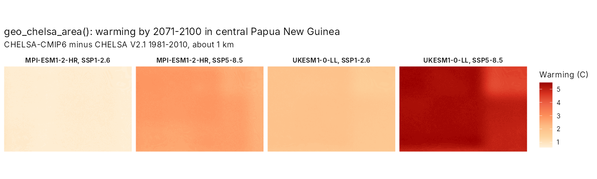
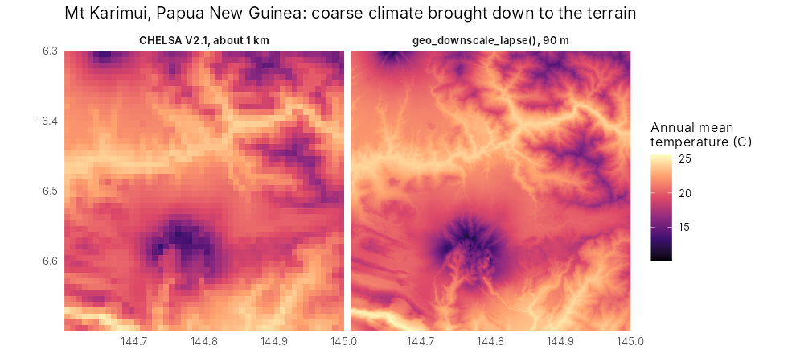
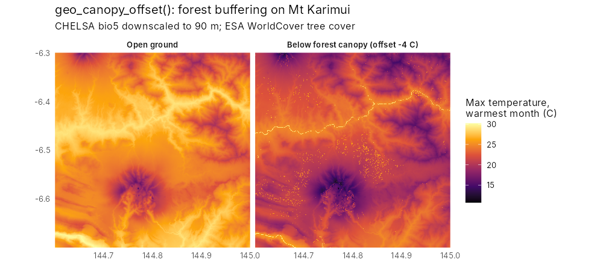
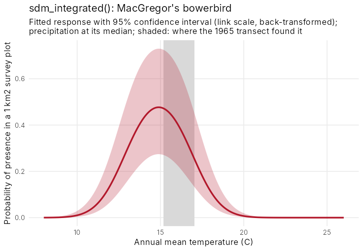
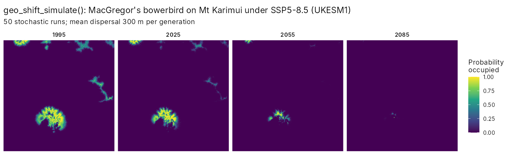
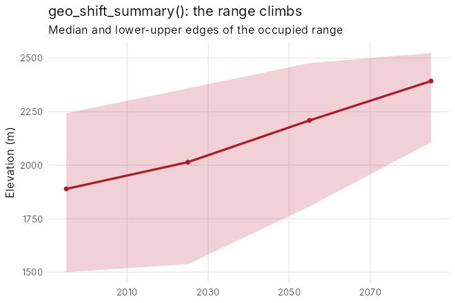
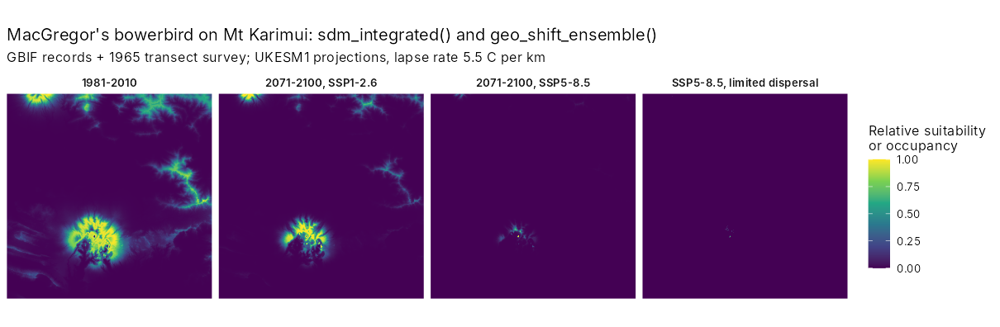
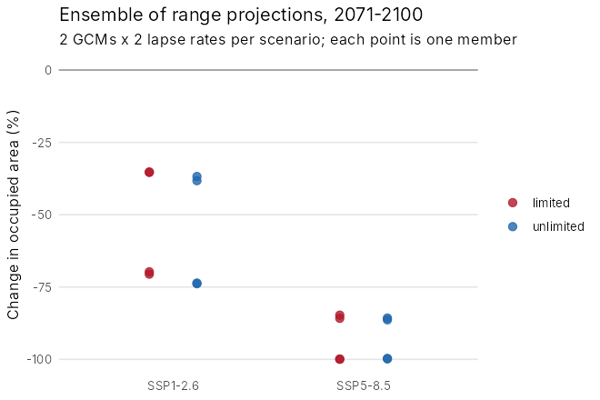
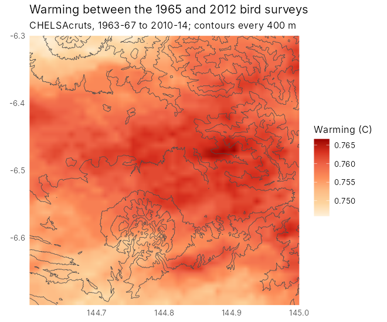
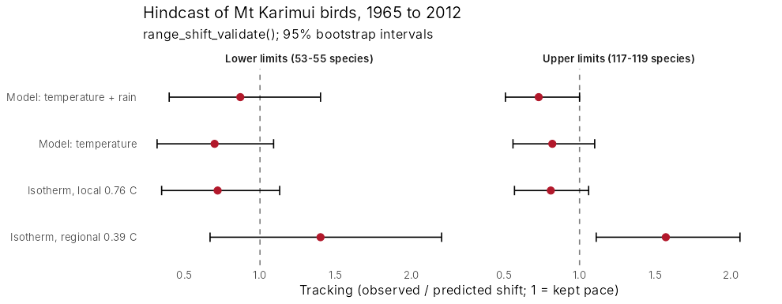

11. Range shifts under climate change
guide-11-range-shifts.Rmdtidymapr 0.3.0 adds a hybrid model of range shifts: fine-scale climate, an integrated niche model and a simulation of colonisation and extinction, run over an ensemble of climate futures. This chapter walks through it for MacGregor’s bowerbird (Amblyornis macgregoriae) on Mt Karimui, Papua New Guinea, with real data: CHELSA climate, GBIF records, the SRTM elevation model and ESA WorldCover. The figures were made with the code shown; the code needs an internet connection and is not run when this page is built.
| Step | Functions |
|---|---|
| Climate for an area, now and in the future |
geo_chelsa_area(), geo_chelsa_urls()
|
| Down to the terrain and below the canopy |
geo_downscale_lapse(),
geo_canopy_offset()
|
| Niche from records and surveys | sdm_integrated() |
| Dispersal, colonisation and extinction |
geo_shift_simulate(),
geo_shift_summary()
|
| Ensembles of futures |
geo_climate_scenarios(),
geo_shift_ensemble()
|
1. Climate for an area
geo_chelsa_area() reads CHELSA V2.1 (1981-2010) and
CHELSA-CMIP6 projections for five climate models (GCMs), three emission
scenarios (SSPs) and three periods. Only the window over the area is
read, so a region takes seconds.
library(tidymapr)
png <- c(143, -8, 147.5, -5)
now <- geo_chelsa_area(png, "bio1")
future <- geo_chelsa_area(png, "bio1",
period = "2071-2100",
gcm = c("mpi-esm1-2-hr", "ukesm1-0-ll"), ssp = c("ssp126", "ssp585")
)
warming <- future - now
The models disagree: by 2071-2100, central New Guinea warms by about 1 degree C under SSP1-2.6 with MPI-ESM1-2-HR and by over 5 degrees C under SSP5-8.5 with UKESM1. Projections should span that range.
2. Down to the terrain and below the canopy
A 1 km cell on a tropical mountain can span over 1,000 m of
elevation, about 5 degrees C. geo_downscale_lapse()
corrects each fine cell by its height above or below the cell’s mean,
with a lapse rate measured on the mountain (5.1 degrees C per km on Mt
Karimui).
area <- c(144.6, -6.7, 145.0, -6.3)
dem <- geo_elevation(bbox = area, buffer = 0)[[1]]
bio1 <- geo_downscale_lapse(geo_chelsa_area(area, "bio1"), dem, lapse_rate = 5.1)
Below a closed canopy, maximum temperatures are several degrees lower
than in the open. geo_canopy_offset() adds that buffer,
scaled by canopy cover.
bio5 <- geo_downscale_lapse(geo_chelsa_area(area, "bio5"), dem, 5.1)
trees <- geo_landcover(area, template = dem) == 10
forest_bio5 <- geo_canopy_offset(bio5, terra::resample(trees * 1, dem, "average"), offset = -4)
3. A niche from records and surveys
GBIF records are many but biased towards roads and towns;
standardised surveys are few but unbiased. sdm_integrated()
fits one niche to both: presence-only records as a point process and
surveys as presence-absence. Here, 300 GBIF records are combined with
the 1965 transect on Mt Karimui, where the bowerbird was found between
1,585 and 1,981 m. unimodal = "bio1" forces a hump-shaped
response to temperature, so the model cannot predict ever-rising
suitability in warmer climates.
fit <- sdm_integrated(
presence = gbif_climate, background = background, area = n_cells,
survey = transect_1965, covariates = c("bio1", "bio12"), unimodal = "bio1"
)
The curve and its band come straight from the fitted model:
predict(fit, newdata, se_fit = TRUE) returns the standard
error of the linear predictor (from the covariance of the estimates) and
a 95% confidence interval formed on the link scale and back-transformed,
so it stays between 0 and 1.
curve <- data.frame(bio1 = seq(8, 26, 0.1), bio12 = 4030)
cbind(curve, predict(fit, curve, se_fit = TRUE))4. Dispersal, colonisation and extinction
Suitable climate is not enough: a species has to reach it.
geo_shift_simulate() runs a stochastic patch-occupancy
model on a series of suitability maps. Each generation an empty cell is
colonised with a probability that rises with occupied cells nearby (a
negative exponential dispersal kernel), and an occupied cell persists
with a probability set by its suitability. The model is written in C++
and runs in parallel; results do not depend on the number of cores.
suit <- c(now_suit, suit_2025, suit_2055, suit_2085)
sim <- geo_shift_simulate(suit,
dispersal_mean = 300, steps_per_layer = 3, nsim = 50, seed = 1
)
geo_shift_summary(sim, elevation = dem)

Under SSP5-8.5 with UKESM1 the occupied area shrinks from 74 km^2 in 1995 to 41 km^2 by 2025, 9 km^2 by 2055 and under 1 km^2 by 2085, while the median elevation of the occupied range climbs from 1,890 to 2,390 m: the range runs out of mountain. Suitability here is relative (divided by its present maximum), so that the best present habitat persists from one generation to the next.
5. Ensembles of futures
geo_climate_scenarios() builds every combination of GCM,
SSP and lapse rate on the fine grid; geo_shift_ensemble()
runs the niche model and the simulation on each, with limited and
unlimited dispersal, and summary() gives the probability of
losing more than 30, 50 or 80% of the range.
sc <- geo_climate_scenarios(area, dem,
variables = c("bio1", "bio12"), period = "2071-2100",
gcm = c("mpi-esm1-2-hr", "ukesm1-0-ll"), ssp = c("ssp126", "ssp585"),
lapse_rates = c(4.5, 5.5)
)
ens <- geo_shift_ensemble(fit, sc, dispersal_mean = 300, steps = 8, nsim = 20)
summary(ens)

Every member loses range. Under SSP1-2.6 the median loss is 53% with limited dispersal (35 to 71% across members); under SSP5-8.5 it is 93% (85 to 100%), and every member loses more than half of the range. Which climate model is used matters as much as the scenario; the lapse rate matters little here. Limited and unlimited dispersal agree because the bowerbird only needs to move a short way upslope: dispersal limits matter most for species that must cross gaps.
6. Does it work? A hindcast
The workflow was tested on birds resurveyed on Mt Karimui in 1965 and 2012 (Freeman and Class Freeman 2014). Using warming measured on the mountain, the predicted shifts matched the observed community-wide shifts; see the full case study.


References
De Frenne, P. et al. (2019). Global buffering of temperatures under forest canopies. Nature Ecology & Evolution, 3, 744-749.
Fithian, W., Elith, J., Hastie, T. and Keith, D. A. (2015). Bias correction in species distribution models: pooling survey and collection data for multiple species. Methods in Ecology and Evolution, 6, 424-438.
Freeman, B. G. and Class Freeman, A. M. (2014). Rapid upslope shifts in New Guinean birds illustrate strong distributional responses of tropical montane species to global warming. PNAS, 111, 4490-4494.
Hanski, I. (1998). Metapopulation dynamics. Nature, 396, 41-49.
Karger, D. N. et al. (2017). Climatologies at high resolution for the earth’s land surface areas. Scientific Data, 4, 170122.